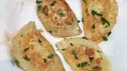

How To Make Pierogi

Description
ahh pierogi a classic polish gourmet, those cute little squishy, skinny, thingy
so precious.... so tasty.... and now even you can make it, simply by following this recipe!
hence brace yourself, prepare the utensils and let's start cooking!
Dough:
- 4 ½ cups all-purpose flour
- 2 teaspoons salt
- 2 cups sour cream
- 2 eggs
- 1 egg yolk
- 2 tablespoons butter, melted
- 2 tablespoons vegetable oil
Filling:
- 8 baking potatoes, peeled and cubed
- 1 cup shredded Cheddar cheese
- 2 tablespoons processed cheese sauce
- 1 pinch onion salt, or to taste
- salt and pepper to taste
Steps:
- Prepare the dough: Stir together flour and salt in a large bowl. Whisk together sour cream, eggs, egg yolk, butter, and oil in a separate bowl. Stir the wet ingredients into the flour until well blended and the dough comes together. Cover the bowl with a towel, and let stand for 15 to 20 minutes
- Meanwhile, prepare the filling: Place potatoes into a pot, and fill with enough water to cover. Bring to a boil, and cook until tender, about 15 minutes
- Drain potatoes, and mash with shredded cheese and cheese sauce while still hot. Season with onion salt, salt, and pepper. Set aside to cool
- Separate pierogi dough into two balls. Roll out one ball at a time on a lightly floured surface until it is thin enough to work with, but not too thin so that it tears, between 1/8- and 1/4-inch thick. Cut into circles using a cookie cutter, pierogi cutter, or a glass, 3- to 4-inches in diameter
- Assemble the perogies: Brush a little water around the edges of the circles, and spoon some filling into the center. Fold the circles over into half-circles, and press to seal the edges with fingers, or use a fork for crimped edges
- Place perogies on a cookie sheet, and freeze. Once frozen, transfer to freezer storage bags or containers
- To cook the perogies: Bring a large pot of lightly salted water to a boil. Lower perogies into the water in batches. Cook until they float to the top, about 5 minutes. Do not boil too long, or they will be soggy. Remove with a slotted spoon
and that's it! you just succesfully made a pierogi! can you feel the smell? such a pleasant and empowering odor!
credit to this helpful site!